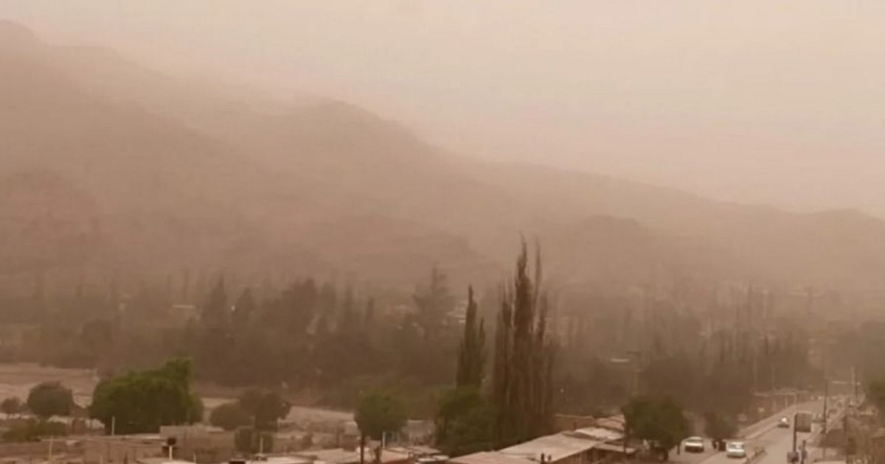

Veranos cortos y frescos
Las temperaturas máximas rondan los 22 °C. Los días son extremadamente soleados y limpios, perfectos para la observación astronómica y festivales al aire libre.
Ciudad minera, científica y cultural en las alturas de la montaña.
Antarion nació a principios del siglo XX como un pequeño campamento extractivo de hierro y minerales raros.
Con el paso de las décadas, la riqueza de su suelo atrajo a trabajadores de diversas regiones, transformando el asentamiento industrial en una próspera ciudad andina.
Con la posterior llegada de observatorios astronómicos y talleres artísticos en espacios industriales recuperados,
Antarion consolidó una identidad única donde la dureza del trabajo subterráneo convive armónicamente con la ciencia y el arte vanguardista.
Las temperaturas máximas rondan los 22 °C. Los días son extremadamente soleados y limpios, perfectos para la observación astronómica y festivales al aire libre.
El termómetro cae fácilmente a los -10 °C por las noches. Son habituales las grandes nevadas que cubren las estructuras de hierro, creando un contraste visual entre el óxido y la nieve.
Viento seco y cálido que desciende de las cumbres dos o tres veces al año,
levantando un polvo mineral rojizo que tiñe los atardeceres de un color carmesí intenso, imitando a la estrella Antares.

La fuerza de trabajo original asentada en los barrios históricos contiguos a las galerías y vetas principales. Mantienen arraigadas las tradiciones locales.
Comunidad internacional que habita en los barrios altos, próximos a los observatorios. Impulsores de la agenda ambiental y gastronómica moderna.
Comunidad radicada en La Fundición Vieja, transformando galpones e infraestructuras industriales en talleres de escultura, soldadura y centros de arte nocturno.